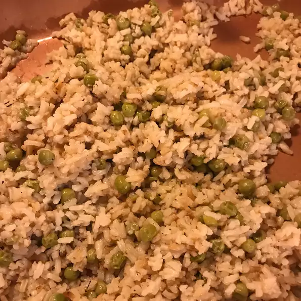

Lemon-Rice Recipe

Description
This lemon rice with peas makes the perfect side dish for any meal! Don't love peas? Make it your own by mixing in your favorite vegetables.
Ingredients:
- 1 ½ cups uncooked long grain rice
- ¼ teaspoon dried thyme
- 2 tablespoons margarine
- 1 (14.5 ounce) can chicken broth
- 1 ¼ cups water
- ¼ cup ReaLemon® lemon juice from concentrate
- ¼ teaspoon pepper
- ¾ cup frozen peas
- 2 tablespoons sliced almonds, toasted
Steps:
- Cook and stir rice and thyme in hot margarine in medium-sized saucepan 5 minutes or until rice is lightly golden. Carefully stir in both, water, ReaLemon®, and pepper. Bring to a boil. Reduce heat; cover and simmer 15 to 18 minutes or until rice is tender and liquid is absorbed.
- Remove from heat. Stir in peas. Cover and let stand 5 minutes. Sprinkle with almonds. Optional: Top with garnish for added color.